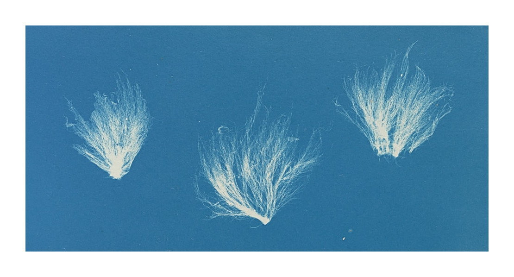
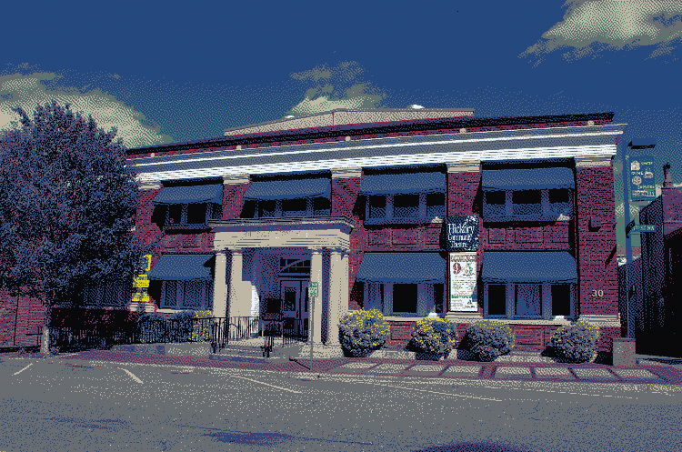
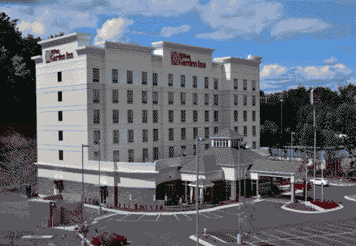
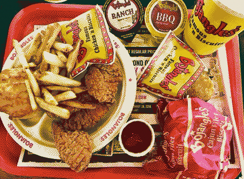
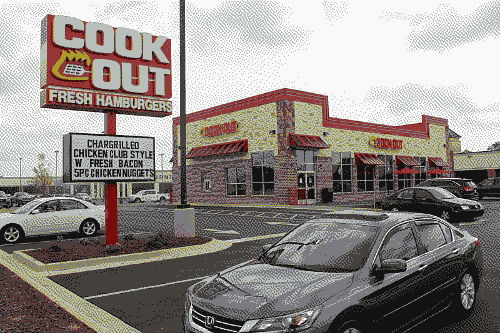
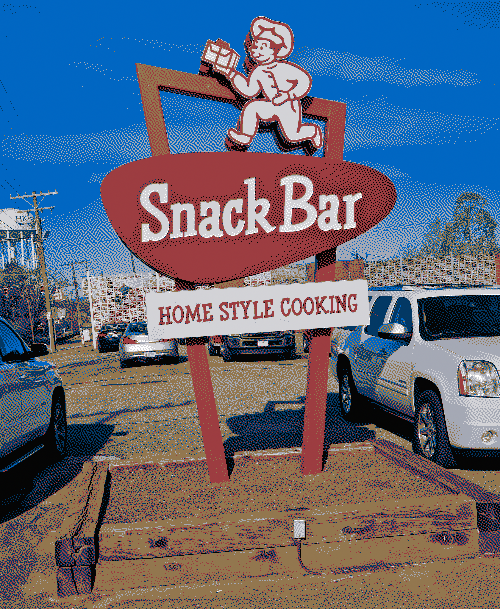

If you move or change your address over
the next few months, feel free to send us an email and let us know
(lzbthblackwood AT gmail DOT com).
Both the ceremony and reception will be held at the Hickory Community Theatre (HCT), located in our hometown of Hickory, North Carolina. The venue is special to both of us, as we both grew up attending shows and volunteering at the theatre through the scouts. It is also important for us to continue supporting the arts in our community.

Cocktail; our event will be held indoors, with air conditioning.
Please do not fear the brutal weather in North Carolina in August!
To protect our loved ones, we respectfully ask that all our guests be
fully vaccinated by the date of our wedding. A person is considered
fully vaccinated 2 weeks after their second dose in a 2-dose series,
such as the Pfizer or Moderna vaccines, or 2 weeks after a single-dose
vaccine, such as Johnson & Johnson's vaccine. This means that the
latest date to receive your second dose of Pfizer/Moderna or only dose
of Johnson & Johnson is July 23, 2022 in order to be present at our
wedding. This information is subject to change as vaccine boosters
become available. We will pass along more information about how to
provide your proof of vaccination in the formal invitation.
For more information about vaccine safety, please visit Center for
Disease Control's COVID-19 site. If you would like access to additional,
reputable information, feel free to reach out.
Click here to find a vaccine in your area (inside the
USA).
We plan to reserve a bank of rooms at the Hilton Garden Inn Hickory,
though there are a variety of options in close proximity to the venue.

For those traveling from afar, the closest airport to Hickory is
Charlotte Douglas International Airport (CLT). While Hickory is a small
town with limited public transportation, shuttle service is available
from CLT to Hickory using the Hickory Hop. We highly encourage
carpooling for our wedding weekend and will provide more information in
the coming months to connect our guests to those who will be traveling
by car.
While we are registered at both Williams Sonoma/West Elm and REI, we
also want to give our guests the opportunity to help us support the arts
in our local community. We will provide more information soon about how
you can help us sponsor an upcoming performance at our venue, the
Hickory Community Theatre.
We are so excited to share our hometown with you! Please use the following info to maximize your Western North Carolina experience!

Bojangles (get the Cajun Fillet Biscuit), there are a lot of these in the area.

Cookout, open till 4am, (get a tray or have an Oreo Mint milkshake for the true Beth/Stew experience), there are a lot of these in the area.
For a true Henry Stewart Engart breakfast:

The Snack Bar
1346 1st Ave SW, Hickory, NC 28602
"Fried chicken & liver dishes are menu staples at this longtime Southern spot with a simple interior."
For a casual lunch/dinner:
Backstreets (get the Asian Kale Salad if you're into that sort of
thing)
For some local brews:
Olde Hickory Brewery
Olde Hickory Taproom
Olde Hickory Station